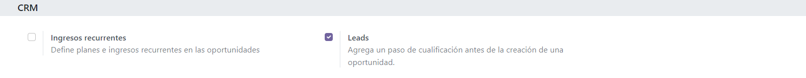
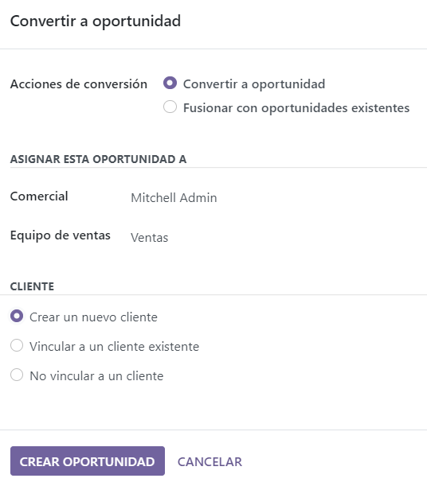
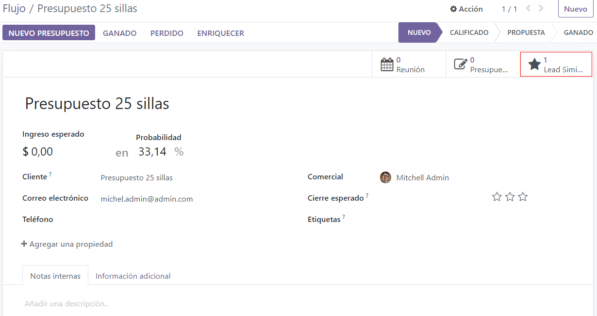

Convertir leads en oportunidades¶
¿What is a lead? A lead is a potential customer who has shown interest in your product or service. Leads act as qualifying steps before an opportunity is created. This provides additional time before a potential opportunity is assigned to a sales person.
Configuración¶
Para activar la función de leads, vaya a , seleccione la casilla con el nombre Leads y luego haga clic en Guardar.
Al activar esta función aparece el nuevo menú Leads en la barra ubicada en la parte superior de la pantalla.

Una vez habilitó la función de leads, esta se aplica de forma predeterminada a todos los equipos de ventas. Para desactivar los leads en un equipo específico, vaya a la . Seleccione un equipo de la lista para abrir su registro, desmarque la casilla Leads y luego haga clic en Guardar.

Convierta un lead en una oportunidad¶
Para convertir un lead en una oportunidad, vaya a y haga clic en un lead de la lista para abrirlo.
Haga clic en el botón Convertir en oportunidad que está ubicado en la esquina superior izquierda de la pantalla. Esta acción abrirá la ventana emergente correspondiente.
En la ventana emergente Convertir a oportunidad seleccione la opción Convertir a oportunidad en el campo Acciones de conversión.
Nota
Si ya existe un lead o una oportunidad en la base de datos para este cliente, de forma automática Odoo sugerirá fusionarlos. Para obtener más información sobre cómo fusionar leads y oportunidades, consulte la sección sobre cómo fusionar leads a continuación.
Luego, seleccione un vendedor y un equipo de ventas al que se debe asignar la oportunidad.
Estos campos se completarán de forma automática con la información correspondiente si el lead ya estaba asignado a un vendedor o a un equipo.
Elija alguna de las siguientes opciones en la sección Cliente:
Crear un nuevo cliente: elija esta opción para usar la información del lead para crear un nuevo cliente.
Vincular a un cliente existente: para vincular esta oportunidad al registro de un cliente existente elija esta opción y luego seleccione uno del menú desplegable.
No vincular a un cliente: elija esta opción para convertir el lead, pero no vincularlo a un cliente nuevo o existente.
Por último, al completar todas las configuraciones, haga clic en Crear oportunidad.
Nota
Don’t worry, if you want to create a customer record from this lead later, you can do it. This is useful to avoid filling up the database with potential customers who have been lost along the way.
Fusionar leads y oportunidades¶
Odoo detecta leads y oportunidades similares de forma automática al comparar las direcciones de correo electrónico de los contactos asociados. En la parte superior del registro del lead u oportunidad aparece un botón inteligente Lead similar en caso de que encuentre uno parecido.
To compare the details of the similar leads/opportunities, click the Similar Leads button. This opens a kanban view with only the similar leads/opportunities. Click into each card to view the details for each lead/opportunity. To merge the two opportunities, switch to the list view, select both opportunities and click the action button. In the dropdown menu, you will see the merge button.
Importante
Al fusionar, Odoo prioriza el lead u oportunidad que se creó primero en el sistema y fusiona la información en donde se creó primero. Si fusiona un lead y una oportunidad el registro resultante se denomina oportunidad, sin importar lo que se creó primero.
Después de confirmar que los leads y las oportunidades deben fusionarse regrese a la vista de kanban con las migas de pan o haga clic en el botón inteligente Lead similar. Haga clic en el icono ☰ (tres líneas verticales) para cambiar a la vista de lista.
Seleccione la casilla ubicada en el lado izquierdo de la página para los leads y las oportunidades que se fusionarán. Luego, haga clic en el icono Acción ⚙️ (engranaje) que se encuentra la parte superior de la página para abrir el menú desplegable y allí seleccione la opción Fusionar para fusionar las oportunidades (o leads) que seleccionó.
Al seleccionar Fusionar en el menú desplegable Acción ⚙️ (engranaje) aparece la ventana emergente Fusionar. Allí deberá asignar oportunidades a un vendedor o a un equipo de ventas.
Debajo de esos campos aparecen los leads y las oportunidades a fusionar, así como su información relacionada. Haga clic en Fusionar.
Nota
No se pierde información al fusionar oportunidades. Los datos de la otra oportunidad se registran en el chatter y en los campos de información como referencia.